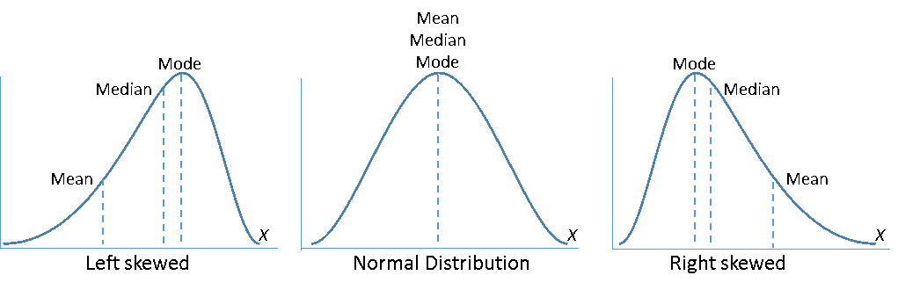
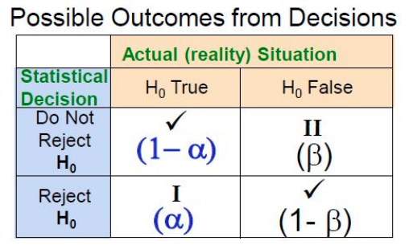
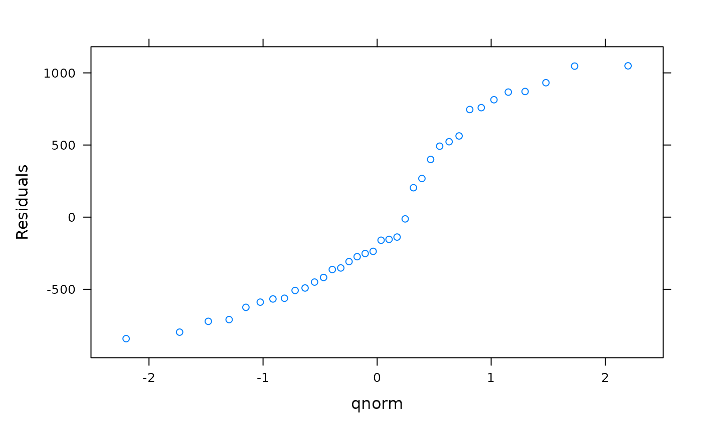
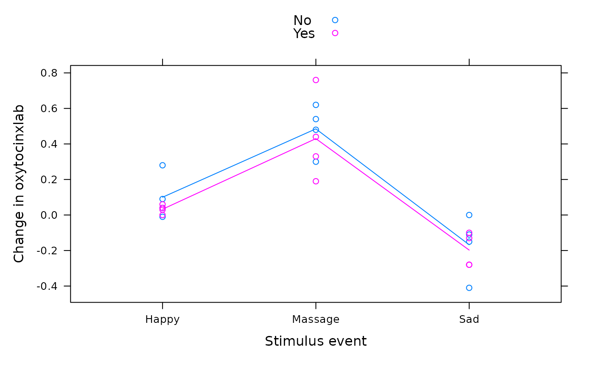
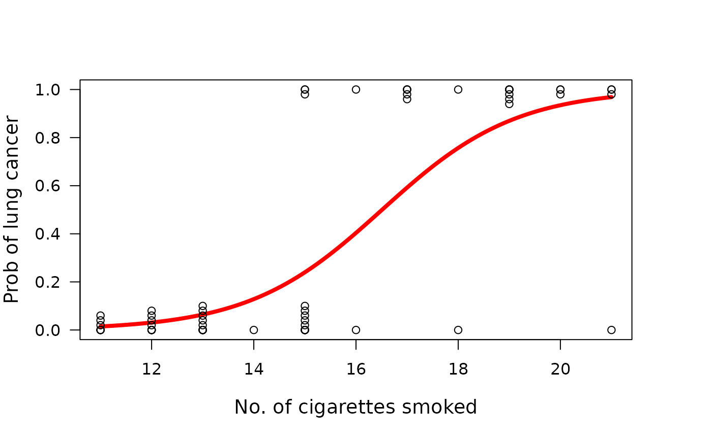

01 - Intro
Sources of Variability
- Natural Variability
- Something that we expect to be different such as the height of a person
- Measurement Variability
- Differences in how people measure a certain thing
Diffrent Types of Variables
Observational Study
- The researcher observes part of the population and measures the characteristics of interest
- Makes conclusions based on the observations but does not influence to change the existing conditions or does not try to affect them.
- E.g. Examine the effect of smoking on lung cancer on those who already smoke.
Experimental Study
- The researcher assigns subjects to groups and applies some treatments to groups and the other group does not receive the treatment.
- Can be designed as blind (participants don’t know what group they are in).
- Can be designed as double-blind (participants and the researcher doesn’t know the groups).
- When an experiment involves both comparison and randomization we call it a randomized comparative experiment.
- E.g. Examine the effect of caffeinated drinks on blood pressure.
Hypothesis Testing
Null hypothesis
- Denoted \(H_0\)
- A statement of no effect.
- Either reject or do not reject \(H_0\)
- E.g. \(H_0\): Caffeinated drinks has no effect on the mean change in pulse rate among young adults
02 - Exploratory Data Analysis
survey <- read.csv("data/M2Survey.csv")Central Tendency
Provides information about the center, or middle part of a quantitative variable.
Median
The middle value in ordered data and can be used to measure the center of the distribution.
- 50% of the observations are to the left of the median.
- If the number of observations is odd, the median is the middle number.
- If the number of observations is even, the median is the average of the two middle numbers.
median(survey$Weight)
#> [1] 65Measures of Location
Percentiles
- Measures of location
- Percentiles divide a set of ranked data so that a certain fraction of data is falling on or below this location
- E.g. 10th percentile is the value such that 10% of the data is equal to or below that value.
Quantiles
- Are labeled between the values 0 to 1.
- 10th percentile is the same as the 0.1 quantile
# 13th percentile
quantile(survey$Weight, probs = 0.13)
#> 13%
#> 54Quartiles
- Divide a set of ranked data into four subgroups of parts. (\(Q_1, Q_2, Q_3\))
-
\(Q_1\) separates the first 25% of ranked data to its left.
- Same as the 25th percentile. Or 0.25 quantile.
-
\(Q_2\) separates the first 50% of ranked data to its left.
- Same as the 50th percentile. Or 0.5 quantile.
- Also the median
-
\(Q_3\) separates the first 75% of ranked data to its left.
- Same as the 75th percentile. Or 0.75 quantile.
Measures of Variability
The variability measures can be used to describe the spread or the dispersion of a set of data. The most common measures of variability are range, the interquartile range (IQR), variance and standard deviation.
Interquartile Range (IQR)
- IQR measures the distance between the first and third quartiles.
- This is the range of the middle 50% of the data
- IQR = \(Q_3\) - \(Q_1\)
IQR(survey$Weight)
#> [1] 15.5Variance and Standard Deviation
- Considers how far each data value is from the mean
- SD is the square root of variance
- SD is the most useful and most important measure of variability.
aggregate(Weight ~ Sex, survey, sd)
#> Sex Weight
#> 1 Female 8.872169
#> 2 Male 13.017779Five Num Summary
Gives a compact description of a distribution including a rough picture of its shape.
Min, \(Q_1\), Median, \(Q_3\), Max
fivenum(survey$Height)
#> [1] 155 167 173 178 193Skewed Distriubtions
Skewness measures the shape of a distribution.
Left or Negatively skewed: A greater number of observations occur in the left tail of the distribution (Mean < Median).
Right or Positively skewed: A greater number of observations occur in the right tail of the distribution (Mean > Median).

Outliers
The causes of outliers come from different ways.
- Data entry or measurement errors
- Sampling problems and unusual conditions
- Natural variation
Detecting
- IQR can be used to find outliers.
- Observation < \(Q_1\) - 1.5 * IQR
- Observation > \(Q_3\) + 1.5 * IQR
outliers(167, 178)
#> Observation < 150.5
#> Observation > 194.503 - Randomness and Probability
Population Parameters Vs Sample Statistics
| Population Param | Sample Stat | |
|---|---|---|
| Size | \(N\) | \(n\) |
| Mean | \(\mu\) | \(\overline{x}\) |
| Variance | \(\sigma^2\) | \(s^2\) |
| SD | \(\sigma\) | \(s\) |
| Proportion | \(p\) | \(\hat{p}\) |
Probability
- How likely that a particular event will happen.
- Probabilities to outcomes can be assigned in three ways
- Subjective probability (reflects on an individual’s belief)
- Calculated or theoretical probability (based on prior knowledge)
- Empirical probability (outcome is based on observed data).
Key Concepts
- Sample Space (\(\Omega\))
- Set of all possible outcomes that might be observed in a random process.
- Event (A)
- A subset of sample space. If an event occurs one of the outcomes in it occurs,
- Complement (\(\overline{A}\))
- The set of all outcomes in \(\Omega\) not in A
- Union (\(A \cup B\))
- The set of all outcomes in A, or in B, or in both.
- Intersection (\(A \cap B\))
- The set of outcomes in both A and B
- If the two events are disjoint then,
- \(P(A \cup B) = P(A) + P(B)\)
Conditional Probability
- Probability of event A occurring if B has already occurred.
- \(P(A|B) = \frac{P(A \cap B)}{P(B)}\)
Independent Events
- Two events are independent if one event occurs and it does not affect the probability of the other event occurring.
- Only if A and B are independent events the probability of A occuring, given B has already occured, will be the same as just the probability of A.
\[ \begin{aligned} P(A|B) &= P(A) \\ P(B|A) &= P(B) \\ P(A \cap B) &= P(A) \times P(B) \end{aligned} \]
Discrete Probability Distribution
- The listing of all possible values of a discrete random variable X along with their associated probabilities
- A random variable that has a countable number of possible values.
- Usually things which are counted, and not measured.
- Example:
discrete_dist(0:3, c(0.21, 0.45, 0.23, 0.11))
#> x P(X=x)
#> 0 0.21
#> 1 0.45
#> 2 0.23
#> 3 0.11
#>
#> Discrete Probability Distribution
#>
#> E(X) Var(X) sd(X)
#> 1.24 0.8224 0.9068627Continuous Probability Distribution
- A random variable that takes values at every time over a given interval
- Usually things which are measured, not counted
- Can not be presented in a table or histogram as there is an uncountable number of possible outcomes.
- The probability of any individual outcome is zero.
- \(P(X=x) = 0\)
- We always calculate the probability for a range of the continuous random variable X.
- \(P(X > a)\)
- \(P(a <= X <= b)\)
Expected Value and Variance of Combined Variables
- Rule 1:
- Suppose \(X\) is a random variable and \(a\) is a constant
\[ \begin{aligned} Y &= aX \\ E(Y) &= aE(X)\\ Var(Y) &= a^2 Var(X) \end{aligned} \]
- Rule 2:
- Suppose \(X\) is a random variable and \(a\) and \(b\) are constants.
\[ \begin{aligned} Y &= aX + b \\ E(Y) &= aE(X) + b\\ Var(Y) &= a^2 Var(X) \\ SD(Y) &= aSD(X) \end{aligned} \]
- Rule 3:
- Suppose \(X_1\) and \(X_2\) are two independent random variables.
\[ \begin{aligned} Y &= X_1 + X_2 \\ E(Y) &= E(X_1) + E(X_2)\\ Var(Y) &= Var(X_1) + Var(X_2) \end{aligned} \]
- Rule 4:
- Suppose \(X_1\) and \(X_2\) are two independent random variables.
\[ \begin{aligned} Y &= X_1 - X_2 \\ E(Y) &= E(X_1) - E(X_2)\\ Var(Y) &= Var(X_1) - Var(X_2) \end{aligned} \]
04 - Probability and Sampling Distributions
Binomial Distribution
Important discrete probability distribution.
We use the concept of Bernoulli Trial to describe the Binomial Distribution.
- A Bernoulli Trial is a random process with only two possible outcomes.
- These outcomes are success and failure
- Let X be the number of successes from n number of independent Bernoulli trials and P(Success) = p.
- X has a Binomial distribution with parameters \(n\) and \(p\)
- X ~ Binom(\(n\), \(p\))
Mean and SD of X
\[ \begin{aligned} X &\sim Binom(n, p) \\ E(X) &= np \\ Var(X) &= np(1-p) \\ SD(X) &= \sqrt{Var(X)} \end{aligned} \]
Example
# Let X be the number of lizards whose length is above the mean. (60%)
n <- 5
p <- 0.6
# Then X ~ Binom(5, 0.6)
# P(X=2)
dbinom(2, 5, 0.6)
#> [1] 0.2304
# P(X < 2)
sum(dbinom(0:1, 5, 0.6))
#> [1] 0.08704
# P(X >= 2) == 1 - P(X < 2)
1 - sum(dbinom(0:1, 5, 0.6))
#> [1] 0.91296
binom_dist(5, 0.6)
#> X ~ Binom(5, 0.6)
#>
#> Binomial Distribution (n, p)
#>
#> E(X) Var(X) sd(X)
#> 3 1.2 1.095445Normal Distribution
- Also called Gaussian Distribution
- Normal Distribution is a continuous probability distribution with two parameters, \(\mu\) and \(\sigma\)
- Let X be a continuous random variable. If X has a Normal distribution we can write,
- X ~ Normal(\(\mu, \sigma\))
- Bell shaped and symmetrical about \(\mu\)
- Location is determined by \(\mu\)
- Spread is determined by \(\sigma\)
- The random variable X has an infinite theoretical range (\(-\infty\) to \(+\infty\)).
Probability Calculations
- The area under the Normal density curve is 1.
- Rough rule to calculate the areas.
- Within 1 SD of the mean is 68%
- Within 2 SD of the mean is 95%
- Within 3 SD of the mean is 99.7%
- We Transform the Normal Distribution to a Standard Normal Distribution.
- If X ~ Normal(\(\mu, \sigma\))
- Then \(Z = \frac{X - \mu}{\sigma}\)
- and Z ~ Normal(0, 1)

Sampling Distribution of the Sample Mean
- The distribution of all possible sample means using the same sample size, selected from a population.
- Suppose we have a population of 1000 people’s heights.
- \(\mu = 162.1504\)
- \(\sigma = 8.147348\)
- We can then take 20 samples each of size n from the population
- We can treat the sample means (\(\overline{X}\)) as a random variable and calculate the mean and the standard deviation of the 20 sample means.
| Sample Size (n) | E(\(\overline{X}\)) | sd(\(\overline{X}\)) |
|---|---|---|
| 4 | 161.95 | 4.619 |
| 16 | 162.55 | 2.095 |
| 25 | 162.53 | 1.521 |
| 100 | 162.36 | 0.780 |
- We can observe that the mean of the sample means closes in on the population mean.
- The standard deviation of the sample means becomes smaller.
- The ratio of the standard deviation of the sample means to the population standard deviation is \(\frac{1}{\sqrt{n}}\)
- If the population is normally distributed, the sampling distribution of the sample means (\(\overline{X}\)) is normally distributed.
- Therefore the distribution of \(\overline{X}\) can be summarized as follows: \[ \begin{aligned} E(\overline{X}) &= \mu \\ Var(\overline{X}) &= \frac{\sigma^2}{n} \\ sd(\overline{X}) &= \frac{\sigma}{\sqrt{n}} \\ \therefore \overline{X} &\sim Norm(\mu, \frac{\sigma}{\sqrt{n}}) \end{aligned} \]
Central Limit Theorem
- As the sample size increases, the sampling distribution of the sample means becomes approximately normally distributed regardless of the shape of the population variable distribution
Example
sampling_dist_mean(50, 8, 4)
#> Xbar ~ Norm(50, 8/sqrt(4))
#>
#> Sampling Distribution of the Sample Mean
#>
#> E(Xbar) Var(Xbar) sd(Xbar)
#> 50 16 4Sampling Distribution of the Sample Proportions
- The sample proportion (\(\hat{p}\))
- Define \(p\) as the population proportion of students whose height is less than or equal to 155cm
- \(\hat{p} = \frac{x}{n}\) where x is the number of students in the sample whose height is less than or equal to 155cm
- Provided that \(n\) is large such that \(np > 5\) and \(n(1 - p) > 5\) we can show that, \[ \begin{aligned} E(\hat{p}) &= p \\ sd(\hat{p}) &= \sqrt{\frac{p(1-p)}{n}} \\ \therefore \hat{p} &\sim Norm(p, \sqrt{\frac{p(1-p)}{n}}) \\ \\ Z &= \frac{\hat{p} - p}{\sqrt{\frac{p(1-p)}{n}}} \\ Z &\sim Norm(0, 1) \\ \end{aligned} \]
Example
sampling_dist_prop(0.1, 10)
#> phat ~ Norm(0.1, 0.0948683)
#>
#> Sampling Distribution of the Sample Proportions
#>
#> E(p.hat) Var(p.hat) sd(p.hat)
#> 0.1 0.009 0.0948683305 - Statistical Inference
Process of drawing conclusions about the population parameters and the reliability of statistical relationships based on sample information.
Confidence Interval (CI)
- The CI is a range of values that is likely to include the population parameter with a certain level of confidence.
- Has a lower limit (LL) and an upper limit (UL)
- \(LL <= \mu <= UL\)
- Takes into consideration the variation in sample statistics from sample to sample.
- Level of Confidence (LOC)
- How confident you will be the interval contain the unknown population parameter.
- LOC is always less than 100%
\[ \begin{aligned} \overline{X} &\pm MOE \\ LL &= \overline{X} - MOE\\ UL &= \overline{X} + MOE\\ MOE &= \frac{UL - LL}{2}\\ MOE &= crit \times se \end{aligned} \]
Student’s t Distribution
- \(t\) values are calculated from sample size of \(n\), will have the \(t(n-1)\) distribution.
- \((n - 1)\) is called the degrees of freedom of the t-distribution
\[ \begin{aligned} T &\sim t(n-1)\\ T &= \frac{\overline{X}-\mu}{\frac{s}{\sqrt{n}}}\\ \overline{X} &\pm t_{(n-1)}^* \frac{s}{\sqrt{n}} \end{aligned} \] - \(t_{(n-1)}^*\) is the number of standard errors required for the desired level of confidence in the \(t_{(n-1)}\) distribution
Choosing Sample Size
- Always ceil the result as the MOE must be less than or equal to the specified value
\[ \begin{aligned} MOE &= Z^* \frac{\sigma}{\sqrt{n}}\\ \therefore n &= \left(\frac{Z^* \sigma}{MOE} \right)^2 \end{aligned} \]
One Sample t-test
- Case 1
- \(H_0 : \mu = \mu_0\)
- \(H_1 : \mu \neq \mu_0\)
- Case 2
- \(H_0 : \mu = \mu_0\)
- \(H_1 : \mu > \mu_0\)
- Case 3
- \(H_0 : \mu = \mu_0\)
- \(H_1 : \mu < \mu_0\)
\[ \begin{aligned} df &= n - 1 \\ se(\overline{X}) &= \frac{s}{\sqrt{n}} \\ t_{stat} &= \frac{\overline{X} - \mu_0}{se(\overline{X})}\\ \overline{X}&\pm t^*\times se(\overline{X}) \end{aligned} \]
Example
one_sample_t(60.8, 10.91, 20, mu = 55)
#>
#> 2-Sided One Sample Student's t-test
#>
#> df se(x) t.stat p.value evidence
#> 19 2.43955 2.377487 0.02808791 moderate
#>
#> 95% Confidence
#> MOE: 5.10604, CI: (55.694, 65.906)
one_sample_assumptions()
#> 1. The data (variable) are continuous
#> 2. The population distribution of data is normally distributed
#> 3. The observations are independentTypes of Errors

- Probability of making Type I and II errors are both conditional probabilities
- Not able to make both errors at the same time.
- Increasing \(\alpha\) will decrease \(\beta\)
Power of the Hypothesis Tet
- Statistical power, or the power of a hypothesis test is the probability that the test correctly rejects the false null hypothesis
- Power(1 - \(\beta\)) = P(Reject \(H_0\) | \(H_0\) is false)
- Increasing sample size makes the hypothesis test more sensitive.
- More likely to reject \(H_0\) when it is false.
- Increases the power of the test
07 - Comparing Two Populations
Two Sample t-test
Hypothesis test to compare the means of two independent populations using t-distribution.
two_sample_assumptions()
#> 1. The data follows a normal distribution in each population.
#> 2. The two samples are independent.
#> 3. Each observation is a random sample from their respective populations.- Case 1
- \(H_0 : \mu_1 = \mu_2\)
- \(H_1 : \mu_1 \neq \mu_2\)
- Case 2
- \(H_0 : \mu_1 = \mu_2\)
- \(H_1 : \mu > \mu_0\)
- Case 3
- \(H_0 : \mu_1 = \mu_2\)
- \(H_1 : \mu_1 < \mu_2\)
Two ways of doing a two sample t-test:
- Assume that unknown population standard deviations are not equal
- \(\sigma_1 \neq \sigma_2\)
- Assume that unknown population standard deviations are equal
- \(\sigma_1 = \sigma_2\)
- Pooled t-test
SD’s Not Equal
\[ \begin{aligned} df &= min(n_1 - 1,\ n_2 - 1) \\ se(\overline{X_1} - \overline{X_2}) &= \sqrt{\frac{s_1^2}{n_1} + \frac{s_2^2}{n_2}}\\ t_{stat} &= \frac{(\overline{X_1} - \overline{X_2})-(\mu_1 - \mu_2)}{se(\overline{X_1} - \overline{X_2})}\\ (\overline{X_1} - \overline{X_2})&\pm t^*\times se(\overline{X_1} - \overline{X_2}) \end{aligned} \]
Example
two_sample_t(26.18, 7.29, 10, 50.19, 17.91, 10)
#>
#> 2-Sided Two Sample t-test SD's Not Equal
#>
#> df se(x1-x2) t.stat p.value evidence
#> 9 6.114836 -3.926516 0.00347639 strong
#>
#> 95% Confidence
#> MOE: 13.8327, CI: (10.1773, 37.8427)
## Welch t-test
breath <- read.csv("data/Breath.csv")
t.test(BreathHeld ~ Sex, data = breath, alternative = "less")
#>
#> Welch Two Sample t-test
#>
#> data: BreathHeld by Sex
#> t = -7.9502, df = 16.63, p-value = 2.31e-07
#> alternative hypothesis: true difference in means between group Female and group Male is less than 0
#> 95 percent confidence interval:
#> -Inf -23.9051
#> sample estimates:
#> mean in group Female mean in group Male
#> 26.181 56.793SD’s Equal (Pooled t-test)
- \(S_p^2\) is the pooled variance
- \(\sqrt{S_p^2}\) is the pooled standard deviation
\[ \begin{aligned} df &= n_1 + n_2 -2 \\ S_p^2 &= \frac{s_1^2(n_1 - 1) + s_2^2(n_2 - 1)}{(n_1 - 1) + (n_2 - 1)} \\ se(\overline{X_1} - \overline{X_2}) &= \sqrt{S_p^2\left(\frac{1}{n_1} + \frac{1}{n_2}\right)} \\ t_{stat} &= \frac{(\overline{X_1} - \overline{X_2}) - (\mu_1 - \mu_2)}{se(\overline{X_1} - \overline{X_2})} \\ (\overline{X_1} - \overline{X_2})&\pm t^*\times se(\overline{X_1} - \overline{X_2}) \end{aligned} \]
Example
pooled_t(167.32, 6.1, 20, 172.26, 6.3, 25, tail = 1)
#>
#> 1-Sided Pooled t-test SD's Equal
#>
#> df S2p se(x1-x2) t.stat p.value evidence
#> 43 38.59419 1.863727 -2.650603 0.0056003 strong
#>
#> 95% Confidence
#> MOE: 3.75856, CI: (1.18144, 8.69856)Two Population Proportions
two_prop_assumptions()
#> 1. Each observation in the sample is randomly selected from their respective populations.
#> 2. Each population is independent.
#> 3. Populations follow binomial distributions.
#> 4. Both np and n(1-p) are greater than 5 in order to use the normal approximation for binomial distributions.- \(p_1\) and \(p_2\) are unknown population proportions
- \(\hat{p_1}\) and \(\hat{p_1}\) are sample proportions
\[ \begin{aligned} se(\hat{p_1} - \hat{p_2}) &= \sqrt{\frac{\hat{p_1}(1 - \hat{p_1})}{n_1} + \frac{\hat{p_2}(1 - \hat{p_2})}{n_2}} \\ Z_{stat} &= \frac{(\hat{p_1} - \hat{p_2}) - (p_1 - p_2)}{se(\hat{p_1} - \hat{p_2})} \\ (\hat{p_1} - \hat{p_2}) &\pm Z^*\times se(\hat{p_1} - \hat{p_2}) \end{aligned} \]
Example
two_prop_z(32 / 100, 100, 18 / 100, 100, tail = 1)
#>
#> 1-Sided Two Proportion z-test
#>
#> se(ph1-ph2) z.stat p.value evidence
#> 0.06043178 2.316662 0.01026108 moderate
#>
#> 95% Confidence
#> MOE: 0.118444, CI: (0.0215559, 0.258444)08 - Statistical Models
Correlation Between Two Variables
Correlation coefficient \(r\) measures the relative strength and direction of the linear relationship between two numerical variables.
Correlation does not imply a causal effect of the two variables.
- \(-1 <= r <= +1\)
- \(r\) close to -1 implies a strong negative linear relationship
- \(r\) close to +1 implies a strong positive linear relationship
- \(r\) close to 0 implies a weak linear relationship
- \(r = 0\) implies no linear relationship
Define:
- \(r\) is the sample correlation coefficient
- \(\rho\) is the population correlation coefficient
\[ \begin{aligned} df &= n - 2 \\ se(r) &= \sqrt{\frac{1 - r^2}{n - 2}} \\ t_{stat} &= \sqrt{r - \rho}{se(r)} \end{aligned} \]
Example
# If given r value
r <- cor(breath$Height, breath$BreathHeld)
correlation_t(r, 20)
#>
#> 2-Sided Correlation t-test
#>
#> df se(r) t.stat p.value evidence
#> 18 0.1761897 3.770092 0.00140176 strong
#>
#> 95% Confidence
#> MOE: 0.475361, CI: (0.314041, 0.855347)
# If given data
cor.test(breath$Height, breath$BreathHeld)
#>
#> Pearson's product-moment correlation
#>
#> data: breath$Height and breath$BreathHeld
#> t = 3.7701, df = 18, p-value = 0.001402
#> alternative hypothesis: true correlation is not equal to 0
#> 95 percent confidence interval:
#> 0.3140413 0.8553471
#> sample estimates:
#> cor
#> 0.6642512Simple Linear Regression
- One dependent (or response variable): \(Y\)
- One independent (or explanatory variable): \(X\)
- A single independent variable (\(X\)) is used to predict the numerical dependent variable (\(Y\))
Population SLR equation:
- \(Y_i = \beta_0 + \beta_1 X_i + U_i\)
- \(\beta_0\) and \(\beta_1\) are population parameters to be estimated using sample data.
- \(\beta_0\) = population Y intercept
- \(\beta_1\) = population slope
-
\(U_i\) = random error in \(Y\) for observation \(i\)
- \(U_i \sim N(0,\sigma)\)
- \(E(U_i) = 0\)
- \(Var(U_i) = \sigma^2\)
- Residual is also called the estimated error (\(e_i\))
- \(e_i = Y_i + \hat{Y_i}\)
Examples
fit <- lm(BreathHeld ~ Height, data = breath)
fit
#>
#> Call:
#> lm(formula = BreathHeld ~ Height, data = breath)
#>
#> Coefficients:
#> (Intercept) Height
#> -181.740 1.277
predict(fit, newdata = data.frame(Height = 160))
#> 1
#> 22.64519Measures of Variation
- How much of the variation in the dependent variable, Y is explained by variation in the independent variable, X.
\[ \begin{aligned} SST &= \text{Total Sum of Squares} \\ SSL &= \text{Line Sum of Squares} \\ SSR &= \text{Residual Sum of Squares} \\ SST &= SSL + SSR R^2 &= \frac{SSL}{SST} \end{aligned} \]
Example
summary(aov(BreathHeld ~ Height, data = breath))
#> Df Sum Sq Mean Sq F value Pr(>F)
#> Height 1 2656 2656.1 14.21 0.0014 **
#> Residuals 18 3364 186.9
#> ---
#> Signif. codes: 0 '***' 0.001 '**' 0.01 '*' 0.05 '.' 0.1 ' ' 1
SSL <- 2656
SST <- SSL + 3364
R2 <- SSL / SST
R2
#> [1] 0.441196
# Only 44.12% of variation in breath holding time is explained by variation in height.Inferences for the Slop Coefficient
\[ \begin{aligned} df &= n - 2 \\ t_{stat} &= \frac{b_1 - \beta_1}{se(b_1)} \\ b_1 &\pm t^* \times se(b_1) \end{aligned} \]
Example
slr_t(1.2774, 0.3388)
#> [1] 3.770366
summary(lm(BreathHeld ~ Height, data = breath))
#>
#> Call:
#> lm(formula = BreathHeld ~ Height, data = breath)
#>
#> Residuals:
#> Min 1Q Median 3Q Max
#> -21.549 -6.338 -2.742 7.880 25.077
#>
#> Coefficients:
#> Estimate Std. Error t value Pr(>|t|)
#> (Intercept) -181.7405 59.2889 -3.065 0.00667 **
#> Height 1.2774 0.3388 3.770 0.00140 **
#> ---
#> Signif. codes: 0 '***' 0.001 '**' 0.01 '*' 0.05 '.' 0.1 ' ' 1
#>
#> Residual standard error: 13.67 on 18 degrees of freedom
#> Multiple R-squared: 0.4412, Adjusted R-squared: 0.4102
#> F-statistic: 14.21 on 1 and 18 DF, p-value: 0.001402Assumptions
lr_assumptions()
#> 1. Linearity - Relationship between X and Y is linear.
#> 2. Errors are independent
#> 3. Normality of Residuals (errors)
#> 4. Equal variance of errors.With Dummary Variables
- \(Y_i = \beta_0 + \beta_1 X_i + U_i\)
- \(X\) is a dummy variable, which can take only two values, either 1 or 0.
summary(lm(BreathHeld ~ Sex, data = breath))
#>
#> Call:
#> lm(formula = BreathHeld ~ Sex, data = breath)
#>
#> Residuals:
#> Min 1Q Median 3Q Max
#> -14.603 -4.526 1.338 4.065 16.477
#>
#> Coefficients:
#> Estimate Std. Error t value Pr(>|t|)
#> (Intercept) 26.181 2.723 9.616 1.63e-08 ***
#> SexMale 30.612 3.850 7.950 2.68e-07 ***
#> ---
#> Signif. codes: 0 '***' 0.001 '**' 0.01 '*' 0.05 '.' 0.1 ' ' 1
#>
#> Residual standard error: 8.61 on 18 degrees of freedom
#> Multiple R-squared: 0.7783, Adjusted R-squared: 0.766
#> F-statistic: 63.21 on 1 and 18 DF, p-value: 2.678e-07
# b1 = 30.612 implies that the mean breath holding time for males is
# 30.612 seconds higher than that of for females.Multiple Linear Regression
- \(Y_i = \beta_0 + \beta_1 X_1i + beta_2 X_2i + U_i\)
# No interaction
summary(lm(BreathHeld ~ Height + Sex, data = breath))
#>
#> Call:
#> lm(formula = BreathHeld ~ Height + Sex, data = breath)
#>
#> Residuals:
#> Min 1Q Median 3Q Max
#> -14.8269 -4.0341 0.8832 4.1264 16.2531
#>
#> Coefficients:
#> Estimate Std. Error t value Pr(>|t|)
#> (Intercept) 47.0452 58.8693 0.799 0.435
#> Height -0.1244 0.3506 -0.355 0.727
#> SexMale 32.3662 6.3267 5.116 8.61e-05 ***
#> ---
#> Signif. codes: 0 '***' 0.001 '**' 0.01 '*' 0.05 '.' 0.1 ' ' 1
#>
#> Residual standard error: 8.827 on 17 degrees of freedom
#> Multiple R-squared: 0.78, Adjusted R-squared: 0.7541
#> F-statistic: 30.13 on 2 and 17 DF, p-value: 2.577e-06
# Interaction
summary(lm(BreathHeld ~ Height * Sex, data = breath))
#>
#> Call:
#> lm(formula = BreathHeld ~ Height * Sex, data = breath)
#>
#> Residuals:
#> Min 1Q Median 3Q Max
#> -14.4623 -4.8342 0.7925 3.8804 16.6177
#>
#> Coefficients:
#> Estimate Std. Error t value Pr(>|t|)
#> (Intercept) 84.3331 86.8828 0.971 0.346
#> Height -0.3468 0.5178 -0.670 0.513
#> SexMale -41.7486 125.0206 -0.334 0.743
#> Height:SexMale 0.4249 0.7158 0.594 0.561
#>
#> Residual standard error: 9 on 16 degrees of freedom
#> Multiple R-squared: 0.7847, Adjusted R-squared: 0.7443
#> F-statistic: 19.44 on 3 and 16 DF, p-value: 1.385e-05\[ \begin{aligned} df &= n - k - 1 \\ t_{stat} &= \frac{b_j - \beta_j}{se(b_j)} \\ \text{Adjusted } R^2 &= 1 - \left((1 - R^2)(\frac{n - 1}{n - k - 1}) \right) \end{aligned} \]
Examples
mlr_adjusted_R2(0.78, 20, 2)
#> [1] 0.7541176
lr_assumptions()
#> 1. Linearity - Relationship between X and Y is linear.
#> 2. Errors are independent
#> 3. Normality of Residuals (errors)
#> 4. Equal variance of errors.09 - Analysis of Variance (ANOVA)
anova_assumptions()
#> 1. Observations are random and independent.
#> 2. Observations in each sample group are drawn from approximately normally distributed populations. Is robust to violations.
#> 3. Population variances of the groups are equal (Homogeneity of Variances).| Source | df | SS | MS | F | p |
|---|---|---|---|---|---|
| Independent Categorical Variable(s) | \(k - 1\) | \(SSG\) | \(MSG = \frac{SSG}{(k - 1)}\) | \(\frac{MSG}{MSR}\) | \(P(F >= F^*\)) |
| Residuals | \(n - k\) | \(SSR\) | \(MSR = \frac{SSR}{(n - k)}\) | ||
| Total | \(n - 1\) | \(SST\) | \(MST = \frac{SST}{(n - 1)}\) |
- \(k\) = number of groups in the independent variable
- \(n\) = sample size
To perform an ANOVA test of equality of population means, we subdivide the total variation in the values into two parts.
- Variation between the groups
- Variation within the groups
Total variation = Between Group Variation + Within Group Variation
SST = SSG + SSR
One-Way ANOVA
- One quantitative response (or dependent) variable
- One independent categorical variable
bw <- read.csv("data/M9BirthWeight.csv")
summary(aov(BirthWeight ~ Race, data = bw))
#> Df Sum Sq Mean Sq F value Pr(>F)
#> Race 2 3002792 1501396 2.899 0.0604 .
#> Residuals 87 45060356 517935
#> ---
#> Signif. codes: 0 '***' 0.001 '**' 0.01 '*' 0.05 '.' 0.1 ' ' 1
# R^2 = SSG/SST
SSG <- 3002792
SST <- SSG + 45060356
SSG / SST
#> [1] 0.06247597
# 6.25% of variability in the birth weight is explained by the race of the motherNormal Probability plots for Residuals
- If all plots roughly follow a linear trend thus we can assume normality of residuals.
bw$resid <- resid(aov(BirthWeight ~ Race, data = bw))
# qqmath(subset(bw, Race == "Other")$resid, ylab = "Residuals")
# qqmath(subset(bw, Race == "White")$resid, ylab = "Residuals")
qqmath(subset(bw, Race == "Black")$resid, ylab = "Residuals")
Multiple Comparisons
- The null and alternative hypothesis in a One Way ANOVA is such that:
- \(H_0 : \mu_1 = \mu_2 = ... = \mu_k\) (k = no. of groups)
- \(H_1 :\) Not all \(\mu_j\)’s are the same.
- If \(H_0\) is rejected then we should find out which population means are different.
potato <- read.csv("data/M9Potato.csv")
summary(aov(Yield ~ Treatment, data = potato))
#> Df Sum Sq Mean Sq F value Pr(>F)
#> Treatment 3 54416 18139 5.773 0.00517 **
#> Residuals 20 62837 3142
#> ---
#> Signif. codes: 0 '***' 0.001 '**' 0.01 '*' 0.05 '.' 0.1 ' ' 1There are 4 treatment groups in “Potato”. That is \(k = 4\)
\[ \begin{aligned} \text{No. of pairs } &= {k \choose 2} \\ &= \frac{k!}{2!(k-2)!}\\ &= \frac{4}{2!(4 - 2)!} \\ \therefore \text{No. of pairs } &= 6 \end{aligned} \]
Pairwise t-test
- Using a significance level of 5% (\(\alpha = 0.05\)) we reject the individual null hypothesis for each p-value that is less than 0.05.
pairwise.t.test(potato$Yield, potato$Treatment, p.adjust.method = "none")
#>
#> Pairwise comparisons using t tests with pooled SD
#>
#> data: potato$Yield and potato$Treatment
#>
#> A B C
#> B 0.02041 - -
#> C 0.00055 0.12837 -
#> D 0.07778 0.51728 0.03620
#>
#> P value adjustment method: noneTherefore we can say \(\mu_A \neq \mu_B\), \(\mu_A \neq \mu_C\), \(\mu_C \neq \mu_D\)
Pairwise t-test Bonferroni Correction
- Used to contract the problem of multiple comparisons.
- We use a smaller level of significance.
- Significance = \(\frac{0.05}{q}\), where \(q\) is the number of pairs
- \(\therefore \alpha = \frac{0.05}{6} = 0.0083\)
pairwise.t.test(potato$Yield, potato$Treatment, p.adjust.method = "bonferroni")
#>
#> Pairwise comparisons using t tests with pooled SD
#>
#> data: potato$Yield and potato$Treatment
#>
#> A B C
#> B 0.1225 - -
#> C 0.0033 0.7702 -
#> D 0.4667 1.0000 0.2172
#>
#> P value adjustment method: bonferroniNow only \(\mu_A \neq \mu_C\) is less than \(\alpha\) (0.0083)
Tukey’s HSD
- Bonferroni method is a little too conservative, reducing the overall power
TukeyHSD(aov(potato$Yield ~ potato$Treatment))
#> Tukey multiple comparisons of means
#> 95% family-wise confidence level
#>
#> Fit: aov(formula = potato$Yield ~ potato$Treatment)
#>
#> $`potato$Treatment`
#> diff lwr upr p adj
#> B-A 81.50000 -9.078612 172.07861 0.0873484
#> C-A 132.83333 42.254721 223.41195 0.0028498
#> D-A 60.16667 -30.411946 150.74528 0.2765269
#> C-B 51.33333 -39.245279 141.91195 0.4084051
#> D-B -21.33333 -111.911946 69.24528 0.9110515
#> D-C -72.66667 -163.245279 17.91195 0.1451915\(\mu_A \neq \mu_C\) is less than \(\alpha\) (0.05)
Two-Way ANOVA
- One quantitative response (or dependent) variable
- Two independent categorical variables
oxy <- read.csv("data/M9Oxytocin.csv", as.is = FALSE)
oxy$change <- oxy$After - oxy$Before
table(oxy$Relationship, oxy$Stimulus)
#>
#> Happy Massage Sad
#> No 4 4 4
#> Yes 4 4 4
aggregate(change ~ Stimulus * Relationship, data = oxy, mean)
#> Stimulus Relationship change
#> 1 Happy No 0.1000
#> 2 Massage No 0.4850
#> 3 Sad No -0.1675
#> 4 Happy Yes 0.0325
#> 5 Massage Yes 0.4300
#> 6 Sad Yes -0.1975Interactions Effects Plot
- If the lines are parallel, this suggests that an interaction is unlikely.
xyplot(change ~ Stimulus,
data = oxy, group = Relationship, type = c("p", "a"),
auto.key = TRUE, ylab = "Change in oxytocinxlab", xlab = "Stimulus event"
)
Two-Way ANOVA
summary(aov(change ~ Stimulus * Relationship, data = oxy))
#> Df Sum Sq Mean Sq F value Pr(>F)
#> Stimulus 2 1.6655 0.8327 37.443 3.85e-07 ***
#> Relationship 1 0.0155 0.0155 0.697 0.415
#> Stimulus:Relationship 2 0.0015 0.0007 0.033 0.968
#> Residuals 18 0.4003 0.0222
#> ---
#> Signif. codes: 0 '***' 0.001 '**' 0.01 '*' 0.05 '.' 0.1 ' ' 1
anova_assumptions()
#> 1. Observations are random and independent.
#> 2. Observations in each sample group are drawn from approximately normally distributed populations. Is robust to violations.
#> 3. Population variances of the groups are equal (Homogeneity of Variances).11 - Chi-square test and Logistic Regression
Chi-Square Test
Commonly use to test the relationships between two categorical variables
- \(f_o\) = Observed Frequency
- \(f_e\) = Expected Frequency
Chi-Square Test for Independence
- \(H_0\) : The two categorical variables are independent.
- \(H_1\) : The two categorical variables are related.
\[ \begin{aligned} f_e = \frac{RowTotal \times ColumnTotal}{GrandTotal} \\ \chi_{stat}^2 = \sum_{allcells}{\frac{(f_o - f_e)^2}{fe}} \end{aligned} \]
Example
chisq <- chisq_indep(Nicotine = c(No = 148, Yes = 52), Placebo = c(No = 182, Yes = 18))
# Observed Frequencies
chisq$observed
#>
#> Nicotine Placebo
#> No 148 182
#> Yes 52 18
# Expected Frequencies
chisq$expected
#>
#> Nicotine Placebo
#> No 165 165
#> Yes 35 35
# Chi-Sqaure test for Independence
chisq
#>
#> Pearson's Chi-squared test
#>
#> data: table(frame$Rows, frame$Cols)
#> X-squared = 20.017, df = 1, p-value = 7.674e-06
# If data use with Yates continuity correction
# chisq.test(table(inhaler$Reduction, inhaler$Inhaler)Chi-Square Goodness of Fit Test
- Used to determine how well a set of data matches a specific probability distribution.
- Use the rule of thumb that all expected frequencies should be at least 1 and 80% of them should be at least 5
- \(f_e = np\)
- df = no. of categories - k - 1, where k is the number of parameters estimated.
Logistic Regression
- Dependent (or response) variable is dichotomous (binary)
- The log odds of the outcome (dependent) variable is modeled as a linear combination of independent (or explanatory) variables.
Odds and Odds Ratio (OR)
- Odds = \(\frac{p}{1 - p}\)
addmargins(chisq$observed)
#>
#> Nicotine Placebo Sum
#> No 148 182 330
#> Yes 52 18 70
#> Sum 200 200 400- Define p = probability of reduction in smoking for subjects with nicotine inhaler
- \(p = \frac{52}{200} = 0.26\)
- Odds of reduction in smoking for subjects with nicotine inhaler:
- \(\frac{p}{1-p} = \frac{0.26}{1-0.26} = 0.3514\)
- Odds for a reduction in smoking for subjects with nicotine inhaler is 0.3514 to 1
Odds for a reduction in smoking for subjects with placebo is:
logistic_odds(18 / 200)
#> [1] 0.0989011OR = \(\frac{\text{Odds}_1}{\text{Odds}_2}\)
logistic_or(52 / 200, 18 / 200)
#> [1] 3.552553Based on sample data the effect of inhaler on reduction in smoking is 3.55 times huger if someone is using a nicotine inhaler than using placebo inhaler. This implies that nicotine inhalers are beneficial in assisting reduction of smoking based on this sample data.
- Since \(p\) is a probability, \(0 < \text{Odds} < \infty\)
- \(-\infty < ln(\frac{p}{1-p}) < \infty\)
- For Odds < 1, \(ln(\frac{p}{1-p})\) is negative
Inferences
Population regression model:
- \(ln(\frac{p}{1-p}) = \beta_0 + \beta_1 X\)
- \(\beta_0\) is the population intercept
- \(\beta_1\) is the slope parameters
Estimated model:
- \(ln(\frac{\hat{p}}{1-\hat{p}}) = b_0 + b_1 X\)
Example
lungs <- read.csv("data/M11Lungs.csv")
lungs$Cancer <- ifelse(lungs$Cancer == "Yes", 1, 0)
library(popbio)
logi.hist.plot(lungs$Cigarettes, lungs$Cancer,
boxp = FALSE,
ylabel = "Prob of lung cancer",
xlabel = "No. of cigarettes smoked"
)
- Logistic regression fits an “S” shaped logistic function.
- The curve goes from - to 1.
- The curve tells us the probability that a person getting a lung cancer based on the number of cigarettes he had per day.
summary(glm(Cancer ~ Cigarettes, data = lungs, family = "binomial"))
#>
#> Call:
#> glm(formula = Cancer ~ Cigarettes, family = "binomial", data = lungs)
#>
#> Deviance Residuals:
#> Min 1Q Median 3Q Max
#> -2.6295 -0.4043 -0.2510 0.5282 1.6895
#>
#> Coefficients:
#> Estimate Std. Error z value Pr(>|z|)
#> (Intercept) -12.5974 3.6584 -3.443 0.000575 ***
#> Cigarettes 0.7630 0.2263 3.371 0.000749 ***
#> ---
#> Signif. codes: 0 '***' 0.001 '**' 0.01 '*' 0.05 '.' 0.1 ' ' 1
#>
#> (Dispersion parameter for binomial family taken to be 1)
#>
#> Null deviance: 52.925 on 39 degrees of freedom
#> Residual deviance: 28.312 on 38 degrees of freedom
#> AIC: 32.312
#>
#> Number of Fisher Scoring iterations: 5\[ \begin{aligned} \hat{p} &= \frac{e^{b_0 + b_1X}}{1 + e^{b_0 + b_1X}} \\ \\ \therefore \hat{p} &= \frac{e^{-12.5974 + 0.7630X}}{1 + e^{-12.5974 + 0.7630X}}\\ \\ \text{When } X &= 15 \end{aligned} \]
# Estimated probability for getting lung cancer for a person who smokes 15 cigarettes per day.
phat <- logistic_phat(-12.5974, 0.7630, 15)
phat
#> [1] 0.240051
# Odds for getting lung cancer for a person who smokes 15 cigarettes per day.
logistic_odds(phat)
#> [1] 0.3158778Compare Odds Between Groups
- Uses a dummy variable for X (Either 0 or 1)
logistic_groups(-2.3136, 1.2677)
#> [1] 3.552672
# Effect of variable on change is 3.55 times higher for a person in the X group12 - Non-Parametric Methods
- Non-parametric statistics are not based on assumptions.
- Data can be collected from a population that does not follow a specific distribution.
- More robust in the presence of outliers or strong skewness
- Generally less powerful then parametric tests.
Sign test
- Sign test is an alternative to a one sample t-test or paired t-test
- Can be used for categorical data
- Uses
dbinom()to calculate p-value
Example
# Differences in heights between 15 pairs of plants
# 15.6, -21.3, 2.5, 5.1, 1.9, 7.3, 8.9, 13.0, 4.4, 9.2, 17.8, 7.6, 23.8, 19.1, -15.2
# Define p = P(Cross-fertilized pants taller)
# H0: p = 0.5
# H1: p > 0.5
# If H0 is true, each pair would have a 0.5 chance of having cross
# fertilized plants taller.
# Define X = Number of pairs that the cross fertilized plant is taller
# X ~ Binom(15, 0.5)
# From the data we observe that X = 13 (because 13 pairs are positive)
# P(X >= 13)
sum(dbinom(13:15, prob = 0.5, 15))
#> [1] 0.003692627Signed-Rank Test
- Equivalent to the paired t-test.
- Test for paired or matched data.
- More powerful than the sign test.
- Uses more information from the sets of scores than the sign test.
- Looks at both the sign and also the magnitude
- The Signed-Rank statistic, \(S\)
- \(S\) = sum of the ranks corresponding to positive differences
Normal Approximation
\[ \begin{aligned} E(S) &= \frac{n(n+1)}{4} \\ sd(S) &= \sqrt{\frac{n(n+1)(2n + 1)}{24}} \\ Z &= \frac{S-E(S)}{sd(S)} \end{aligned} \]
Example
# Differences in heights between 15 pairs of plants
# 15.6, -21.3, 2.5, 5.1, 1.9, 7.3, 8.9, 13.0, 4.4, 9.2, 17.8, 7.6, 23.8, 19.1, -15.2
#
# Take the absolute differences and then rank them
# Absolute differences
# 15.6, 21.3, 2.5, 5.1, 1.9, 7.3, 8.9, 13.0, 4.4, 9.2, 17.8, 7.6, 23.8, 19.1, 15.2
#
# Ranked absolute differences
# 11, 14, 2, 4, 1, 5, 7, 9, 3, 8, 12, 6, 15, 13, 10
#
S <- 11 + 2 + 4 + 1 + 5 + 7 + 9 + 3 + 8 + 12 + 6 + 15 + 13
S
#> [1] 96
#
# H0 : median difference in plant growth is 0
# H1 : median difference in plant growth is positive
#
# P(S >= 96)
signed_rank(S, 15, tail = 1)
#>
#> 1-Sided Signed Rank Test
#>
#> S E(S) sd(S) z.stat p.value evidence
#> 96 60 17.60682 2.044663 0.02044407 moderate
rank_assumptions()
#> Normal Approximation
#> If the number of pairs is such that (n(n+1))/2 is large enough (> 20),
#> a normal approximation can be usedRank-Sum Test
- Nonparametric version o the two sample t-test
- We compare whether the distributions of the two samples are similar in shape
- \(H_0\) : There is no difference between the distributions of the samples
- \(H_1\) : The distributions are different
- \(W\) = sum of the ranks for observations from target sample
- \(n_1\) = the sample size whose ranks are summing.
- \(n_2\) = the sample size of the other group
\[ \begin{aligned} E(W) &= \frac{n_1(n_1 + n_2 + 1)}{2} \\ sd(W) &= \sqrt{\frac{n_1 n_2 (n_1 + n_2 + 1)}{12}} \\ Z &= \frac{W - E(W)}{sd(W)} \end{aligned} \]
Example
# Change in pulse rates (bpm)
# Caff 17, 22, 21, 16, 6, -2, 27, 15, 16, 20
# Decaff 4, 10, 7, -9, 5, 4, 5, 7, 6, 12
# H0 : There is no difference between the distributions of the
# caffeinated and decaffeinated samples
# H1 : The distribution of the caffeinated sample shifted to the right
# of the decaffeinated sample
# Rank the data from smallest to largest
# Caff 16, 19, 18, 14.5, 7.5, 2, 20, 13, 14.5, 17
# Decaff 3.5, 11, 9.5, 1, 5.5, 3.5, 5.5, 9.5, 7.5, 12
# W = sum of the ranks for observations from caffeinated sample.
W <- 16 + 19 + 18 + 14.5 + 7.5 + 2 + 20 + 13 + 14.5 + 17
W
#> [1] 141.5
# p = P(W >= 141.5)
rank_sum(W, 10, 10, tail = 1)
#>
#> 1-Sided Rank-Sum Test (Wilcoxon)
#>
#> W E(W) sd(W) z.stat p.value evidence
#> 141.5 105 13.22876 2.759141 0.00289768 strong